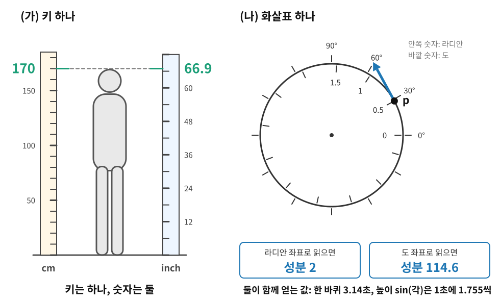

좌표를 바꿔도 남는 것: 화살표 하나, 숫자 둘
접선공간 절에서 각도 0인 점을 지나는 곡선의 속도를 쟀을 때, 각도를 라디안으로 읽으면 2였고 도(°)로 읽으면 약 114.6이었다. 곡선도 그 순간의 속도도 하나인데 숫자는 둘이다. 접선다발 절에서 원 위의 상태를 숫자 한 쌍 (0.5, 2)로 적은 것도, 각도를 도로 읽는 사람에게는 다른 숫자 한 쌍이 된다. 그렇다면 2와 114.6 가운데 어느 쪽이 그 속도인가? 두 사람이 서로 다른 숫자를 들고 있을 때, 둘이 함께 믿을 수 있는 계산은 무엇일까?
두 사람이 적은 같은 상태
일상에서 먼저 보자. 키가 170 cm인 사람을 inch로 재면 66.9가 나오는데, 키는 하나이고 숫자만 둘이다. 170이 66.9보다 크다고 해서 cm로 잰 사람이 더 크다고 말하는 사람은 없다. 숫자는 키와 단위가 함께 정하고, 1 inch가 2.54 cm라서 inch로 잰 숫자는 cm로 잰 숫자의 2.54분의 1로 작아진다. 단위를 키우면 숫자는 거꾸로 작아지는 것이다.
원 위의 화살표도 같다. 각도 0.5 라디안인 점을 지나며 각도가 1초에 2 라디안씩 늘어나는 상태, 곧 접선다발 절의 상태 (0.5, 2)를 두 사람이 적는다. 한 사람은 각도를 라디안으로, 다른 사람은 도로 읽는다. 둘이 각자 계산한 값을 나란히 놓으면 다음과 같다.
| 묻는 것 | 라디안으로 적는 사람 | 도로 적는 사람 |
|---|---|---|
| 상태 (위치, 속도 성분) | (0.5, 2) | (28.6, 114.6) |
| 한 바퀴 도는 데 걸리는 시간 | ||
| 높이 |
||
| 1초에 1 라디안씩 도는 다른 점과 견준 각속도 |
첫 줄의 숫자는 두 사람이 다르지만 아래 세 줄은 같다. 아래 세 줄은 화살표 자체에 대해 묻는 말이고, 첫 줄은 화살표를 한 좌표로 적은 이름이기 때문이다. 둘째 줄에서는 360과 114.6이 모두 도로 적은 숫자라 나눗셈에서 단위가 지워지고, 셋째 줄에서는 도로 적은 사람이 높이를 도의 함수로 미분하면서 붙는
- 좌표 불변량 (좌표를 바꿔도 남는 것 / Coordinate Invariant): 어느 좌표로 계산해도 같은 값이 나오는 양. 화살표 자체, 화살표가 0인지, 한 화살표가 다른 화살표의 몇 배인지, 함수가 그 화살표를 따라 변하는 비율(방향미분)은 좌표 불변량이고, 성분 하나하나는 좌표 불변량이 아니다.

원에서는 라디안과 도 사이의 번역 비율이 어느 점에서나
ML에서: 기준 클래스를 바꾼 로짓
클래스가 셋인 분류 모델이 확률
개념 다지기: 숫자가 바뀌었는데 바뀐 게 없다면 무엇을 계산하나

표의 첫 줄만 들고 온 두 사람이 다툰다고 해 봐요. 한 사람은 속도가 2라 하고, 다른 사람은 114.6이라 해요. 누가 맞아요?

둘 다 맞죠, 단위가 다르니까요. 그런데 그러면 성분은 믿을 게 못 되는 숫자인가요? 코드에서는 결국 성분 배열만 들고 계산하잖아요.
성분을 버리자는 게 아니에요. 그 배열로 무엇을 계산했을 때 두 사람의 답이 같아지는지를 보자는 거예요. 표의 아래 세 줄은 어떻게 만들었죠?

음, 한 바퀴 시간은 360을 114.6으로 나눴으니까 도가 위아래에서 지워졌어요. 높이가 1초에 변하는 양은 미분하면서 붙은
그럼 짝 없이 성분만 쓴 계산은요?

「속도 성분이 100보다 크면 빠르다」 같은 거요. 라디안으로 적은 사람에게는 느리고 도로 적은 사람에게는 빠르겠네요. 아, 학습 코드에 파라미터가 한 스텝에 0.1 넘게 움직이면 경고를 띄우는 줄을 넣어 둔 적이 있는데, 그 경고도 파라미터를 어떻게 적었느냐에 따라 울렸다 말았다 하겠어요.
모델은 그대로인데도요?
네. 표준편차를 그대로 적든 로그를 씌워 적든 같은 분포인데, 경고는 숫자만 보니까요.

로짓도 같은 얘기네요. 기준 클래스를 바꾸니까 둘째 클래스의 로짓이 −0.511에서 0.405로 부호까지 바뀌었는데, 확률표 (0.5, 0.3, 0.2)는 그대로였잖아요. 로짓은 분포에 붙인 이름표, 곧 좌표고 분포는 하나예요.
그래요. 그럼 처음 물음으로 돌아가서, 숫자가 바뀌었는데 바뀐 게 없다면 우리가 계산해서 믿어야 하는 건 뭘까요?

좌표를 바꿔도 답이 같은 것이요. 확률, 손실, 한 바퀴 시간, 높이가 1초에 변하는 양 같은 좌표 불변량이요. 성분은 거기까지 가는 길에 쓰는 숫자고요.
헬스장 체중계가 파운드로 맞춰져 있는 걸 모르고 올라갔다가 154가 떠서 놀란 적이 있어요. 몸은 70 kg 그대로였는데요.

「무엇을 계산해야 믿을 수 있나」는 이 책 끝까지 따라오는 물음이에요. 곡면에서 좌표를 바꿀 때도, 분포의 파라미터를 다시 적을 때도, 먼저 「이 계산은 좌표를 바꿔도 같은가」를 물어요. 원에서는 번역 비율이 어디서나 57.3이라 쉬웠지만, 번역 비율이 자리마다 달라지면 성분을 옮기는 규칙부터 세워야 하죠.
문제 7: 고속도로 거리를 마일로 적으면
확인 서울에서 부산까지 고속도로로 400 km이고, 대전은 서울에서 160 km 지점이다(설명을 위한 값). 같은 길을 마일(1마일 = 1.609 km)로 적는 사람이 있다. 다음 네 말 가운데 거리를 마일로 바꿔 적어도 그대로 참인 것을 모두 고르라. (가) 「대전은 서울에서 부산까지 가는 길의 40% 지점」 (나) 「서울에서 부산까지의 거리는 300보다 큼」 (다) 「시속 100으로 달리면 서울에서 부산까지 4시간」 (라) 「두 휴게소 사이의 거리가 0이면 두 휴게소는 같은 곳」
같이 풀기 세션 7
마일로 바꾸면 서울–부산이 248.6마일, 서울–대전이 99.4마일이에요. (가)는 99.4를 248.6으로 나누면 0.40이라 그대로고, (나)는 248.6이라 300보다 작으니 틀려요. (라)는 0을 몇으로 나눠도 0이니 그대로고요. (다)도 그대로예요. 걸리는 시간은 단위를 바꿔도 같으니까요.
(다)를 마일로 적는 사람이 읽으면 「시속 100」은 무슨 뜻이 되죠?
시속 100마일이요. 그럼
시속 100 km를 마일로 옮기면 62.1이니까, 마일로 적는 사람의 문장은 「시속 62.1로 달리면 4시간」이어야 해. 거리와 빠르기를 같은 단위로 짝지어 바꾸면 나눗셈에서 단위가 지워져서 4시간이 남아.
그래요. 답은 (가)와 (라)예요. (다)에서 정말 남는 것은 4시간이라는 시간이지, 문장에 맨숫자로 박힌 100이 아니에요.
원 위의 화살표에서 한 바퀴 시간을 셀 때 360과 114.6을 둘 다 도로 적어야 했던 것과 같네.
문제 8: 바퀴 수로 적은 각도
계산 원 위의 각도를 「몇 바퀴 돌았나」로 적는 좌표
같이 풀기 세션 8
(가)는 나누기만 하면 돼요. 위치는
(나)는 라디안부터 할게. 가로 위치를 각도로 미분하면
각도가
성분은 2에서 0.318로 여섯 배 넘게 작아졌는데 답은 그대로예요. 왜죠?
성분이 작아진 만큼 「한 칸마다 가로 위치가 변하는 양」이
그럼 바퀴 좌표에서 성분이 제일 작다고 이 점이 제일 느린 건 아니네요. 바퀴 한 칸이 라디안 한 칸보다
문제 9: cm로 적은 키, inch로 적은 키
계산 키 하나로 몸무게를 맞히는 선형 회귀
같이 풀기 세션 9
(가)는
예측은 같았는데 페널티는 여섯 배 넘게 달라요. 그럼 (다)는요?
음, 페널티는 손실에 더해지니까… inch 모델은 같은 예측을 내는 데 페널티를 6.45배 더 물어요. 그러면 학습이 inch 모델의 가중치를 더 세게 줄이겠네요.
그렇게 다시 학습한 inch 모델의 예측은요?

inch 모델이 더 작은 몸무게를 예측하게 돼요. 처음엔 같은 모델이었는데, 단위만 바꾸고 페널티를 넣었더니 다른 모델이 됐어요. 예측은 좌표 불변량인데 가중치 제곱은 아니었던 거예요.
그래서 릿지 회귀를 쓰기 전에 특징마다 평균을 빼고 표준편차로 나눠 단위를 지우는 표준화를 흔히 먼저 해요.
국어와 수학 원점수를 그대로 더하지 않고 표준점수로 바꿔 더하는 거랑 같네요. 과목마다 점수의 단위가 달라서 그대로 더하면 퍼짐이 큰 과목이 합을 좌우하니까요.